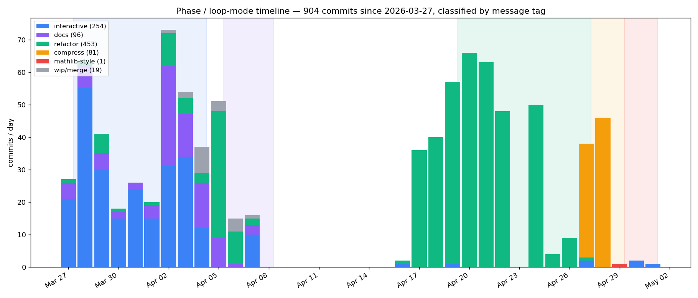
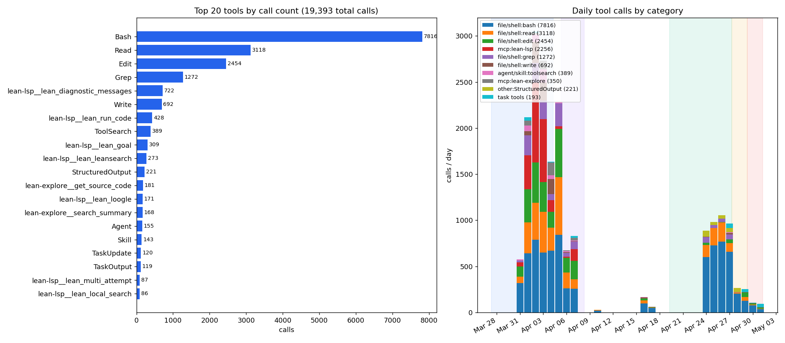
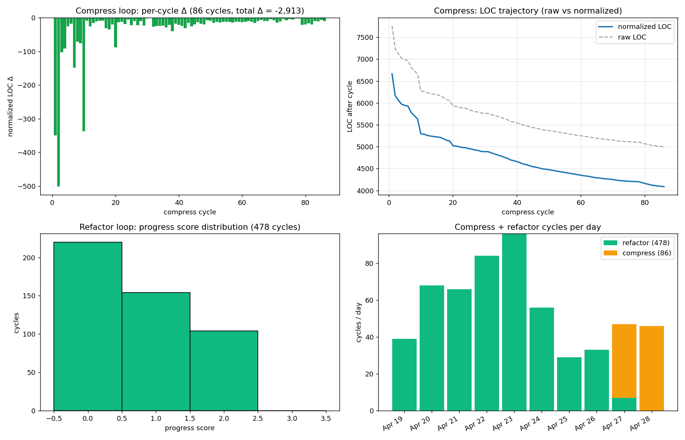

Claude Code and Aristotle agents formalize Grothendieck's vanishing theorem in Lean 4 on top of Mathlib, and expert reviews then assess whether the code is usable as a library contribution.
Abstract
Large language models can often close proof gaps in interactive theorem provers, but a verified theorem is not the same thing as a reusable library contribution. We study this distinction through a detailed case study: a semi-autonomous formalization of Grothendieck's vanishing theorem. The initial version compiles with no sorries, but an expert review found serious problems in definitions, theorem generality, file organization, and the API. We then ran a review-driven refactor and compression process and obtained a second expert review. The before-and-after comparison shows a sharp split: agents adapted well to local, mechanically checkable feedback, but remained weak at choosing definitions and designing APIs. We argue that autoformalization should be evaluated not only by closed sorries, but by whether the resulting formalization survives expert review.
Problem
LLM agents can close sorries in Lean, but a sorry-free proof is not necessarily a reusable library contribution. The paper asks how the quality of agent-produced Lean code falls short of Mathlib standards.
Approach
The authors hand-wrote the Lean statement of Grothendieck's vanishing theorem using only existing Mathlib definitions. Claude Code, given a Hartshorne proof excerpt and using Aristotle for bounded lemmas, produced a sorry-free formalization of about 5,000 lines. A Lean/Mathlib expert reviewed it, the agents ran review-driven refactor and compression loops, and a second expert review assessed the result. Commit logs, telemetry, and both reviews are released as a dataset.

Figure 2 : Daily commit counts classified by loop mode (commit-message tag). Phase shading matches Figure 1 . Interactive commits dominate the proving phase (the formalization was not fully automated); the April 8–17 gap is the expert-review window; the refactor loop (green) drives the April 17–26 activity; the compression loop (orange) and a final mathlib-style polish (red) close out the project.

Figure 4 : Tool calls across the project (19,393 total). Left: top 20 tools by call count, dominated by shell/file operations ( Bash , Read , Edit , Grep ) and Lean LSP queries. Right: daily tool calls grouped by category, phase shading as in Figure 1 . Proof construction leans on Lean LSP diagnostics, goal queries, and library search; the review response is dominated by repository edits, shell ch
Results
Agents handled local, mechanically checkable feedback well, such as file structure, naming, and specific requested changes. They remained weak at choosing definitions, generalizing theorem statements, and designing APIs. The authors argue that autoformalization should be evaluated by whether the output survives expert review, not only by closed sorries.

Figure 5 : Per-cycle refactor and compression outcomes summarizing loop behavior across the project.
Review theme
State A criticism
State B outcome
File structure
Confusing, unorganized names
Fixed
Definitions
Dozens of specific, often unnecessary definitions
Still weakest; no noticeable improvement
Theorem statements
Not general enough to reuse
Requested changes done; no further generalization
API design
Proofs unfold definitions repeatedly
Partially fixed; API noisy and bloated
Proof style
Long walls of `have`, defeq misuse
Better but uneven
Qualitative before-and-after summary from expert reviews (abridged)